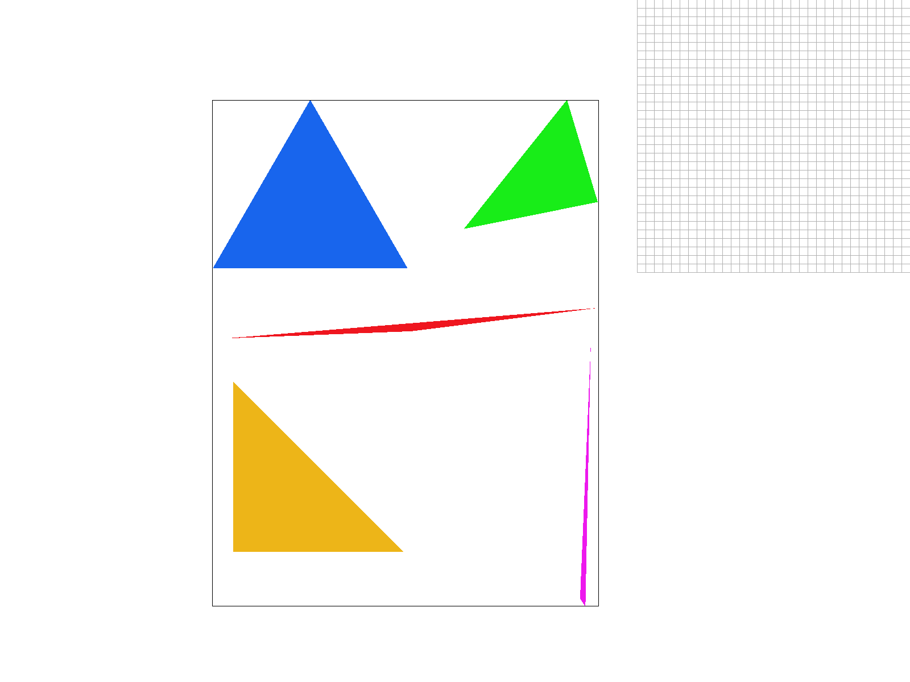
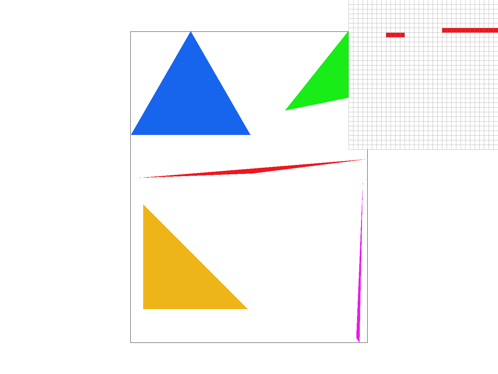
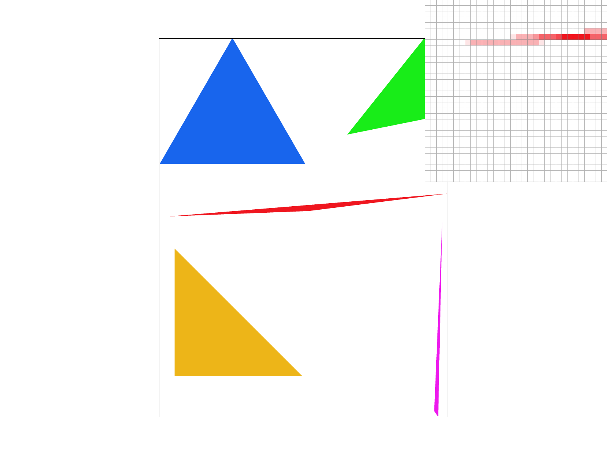
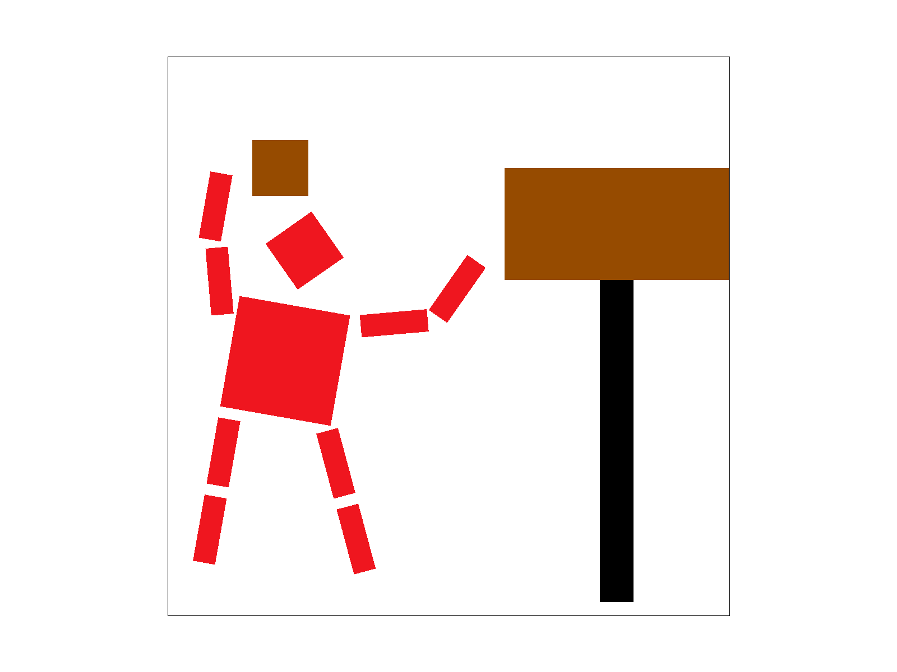
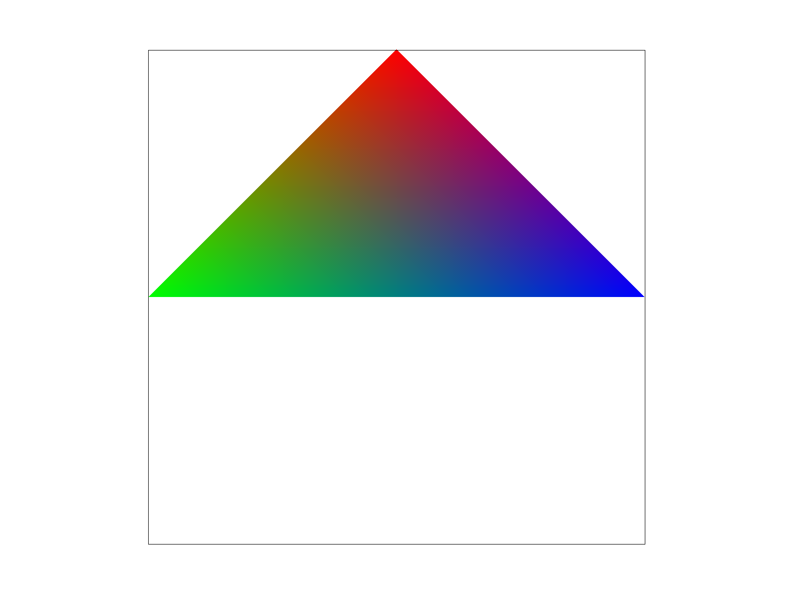
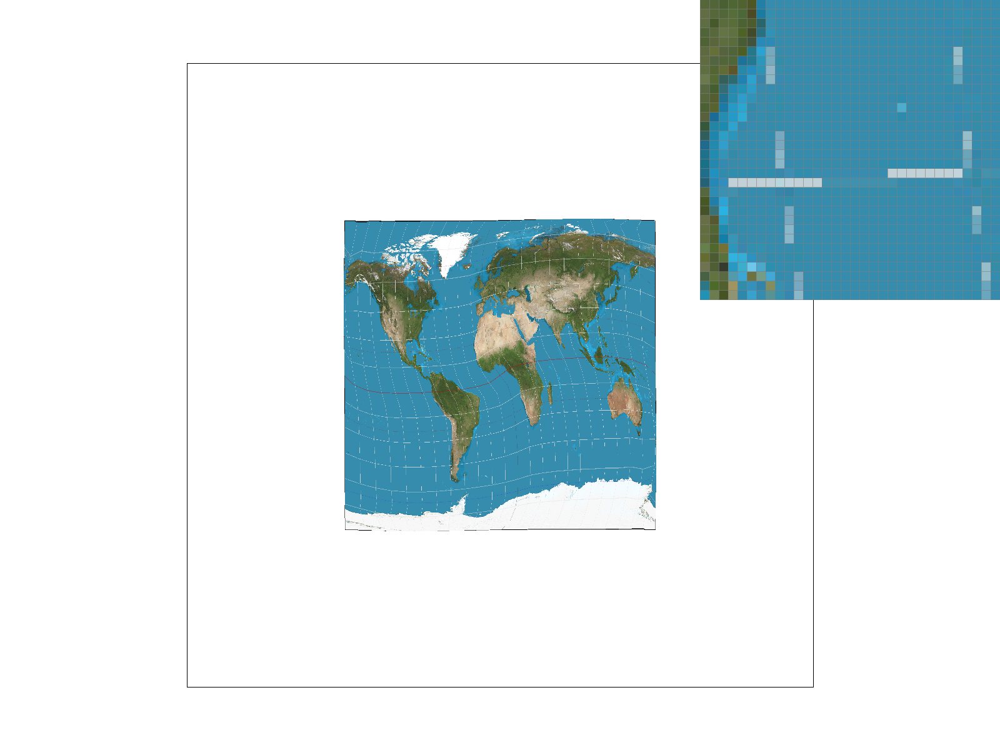

Overview
In this project, we implemented a simple rasterizer that creates drawings one pixel at a time.
The program can draw basic shapes, render images, antialias drawings, and perform basic transforms. It also has
the ability to interpolate across triangle faces using barycentric coordinates and to use multiple techniques to
map textures onto a surface.
What we've built is the basics of what a graphics pipeline must have in order to provide an interactive user
experience. Because any shape can be decomposed into a mesh of triangles, the task of rendering triangles is
applied in nearly all graphics applications. In addition, rendering realistic surfaces often involves applying
textures. A common technique in practice is to use barycentric coordinates with trilinear filtering to map texture
coordinates onto a surface, and we implemented this in our project as well.
The key takeaways from this projet for us were figuring out how to translate the math of cartesian geometry and
transforms into code that renders pixels on the screen in the desired way. Thankfully, since we derived all the
equations in lecture and confirmed their correctness beforehand, we were able to avoid mathematical errors and so
most of our time debugging was spent on resolving implementation errors or memory access errors.
We found the implementation of the Mipmap based trilinear interpolation to be an especially challenging and
interesting task, as the involved thinking through the implementation carefully, accurately determining the mipmap
level, and identifying the appropriate finite differences to approximate the partial derivatives.
Section I: Rasterization
Part 1: Rasterizing single-color triangles
Point in triangle
For rasterization of single color triangles, we implemented the point-in-triangle test for each pixel that we considered. The "point" we test corresponds to the center of each pixel (ie. for the pixel at (x, y), we would test the point (x + 0.5, y + 0.5)). The point-in-triangle test consists of three line tests. A single line test determines on what side a point is in respect to a line created by two vertices of the triangle. We create a line for each of the 3 pairs of vertices, then perform the single line test on our desired point from each of the lines. In order for a point to be within the triangle, all three line tests must be greater than or equal to 0, or all three line tests must be less than or equal to 0.
Optimizing the point in triangle test
For each triangle, our algorithm checks a bounding box of values. The coordinates of this rectangle are defined by the max x, max y, min x, and min y values of all three triangle vertices. We also had to ensure that each corner of the rectangle was within the width and height of the image. This approach of looking at only the bounding box around each triangle is more efficient than looking at every pixel in the image, which could be a very time-consuming and costly operation.
Example Image: test 4
Test example 4 shows that we can now render single color triangles! However, we can see that there is still aliasing due to a small sample rate. Some artifacts that are visible are jaggies and even some missing pixels as shown on the top of the magenta triangle.
Part 2: Antialiasing triangles
Datastructures
The datastructures that we used for supersampling were the samplebuffer and framebuffer.
The samplebuffer is used to store a higher-resolution version of the image (of size = sample_rate * height *
width) as we were creating it, while the framebuffer (of size = height * width) holds the pixels that are actually
rendered to the screen.
To generate the anti-aliased images, we first created the high-resolution version of the image and stored it in
the samplebuffer. Then, we averaged Color values of all the samples within a given pixel and stored the result to
the framebuffer. The sample buffer would no longer be needed after resolving the completed pixels
to the framebuffer. This process is known as supersampling.
In addition to the extra samplebuffer data structure, we had to make a couple changes to the code to enable
supersampling. We had to split each x, and y pixel into sqrt(sampling_rate)
pixels. To achieve this, we added an additional double for-loop within the loop over x, y indices.
We gave these values sub_x, and sub_y. The sampled colors were then saved to samplebuffer using the same technique
to check if the point was in the triangle. However, we had to keep track of pixel location relative to the
triangle and relative to the samplebuffer, which was scaled by a multiple of sample_rate. We had to modify
fill_pixel to take in sub_pixel_x and sub_pixel_y as parameter inputs
to account for the larger size of the samplebuffer.
To translate back to the original framebuffer, we took an average of the subpixels that made up each original
pixel and place this value into the framebuffer in the original x, y location.
Examples
|

|
|
|

|
|
In the examples above we can see the aliasing from the first part slowly descrease as we increase our sampling rate. From afar, it is hard to tell that there were ever jaggies! These changes are observed because without super sampling, pixels were either on or off. If the center of the pixel was within the triangle, it would be filled otherwise it would be left blank or white. With supersampling, if a corner of the triangle is filled, then a weighted portion of it's color will show up. This gives the image its lighter red shaded pixels where only some of the pixel is within the triangle.
Part 3: Transforms
Cubeman learns to play basketball. In this image, we explored rotations, translations, and stretching matrices to position cubeman to play basketball.
Rotations and Scaling fall under a class of transformations known as linear transformations, because they preserve superposition and scaling. To allow for translations as well (an affine transformation), we use the homogenous coordinates representation, ie. appending a "1" to our points so that translations can also be implemented with a matrix-vector multiplication.
Section II: Sampling
Part 4: Barycentric coordinates
Barycentric coordinates is a system to describe points in the plane with respect to three vertices of a specified
triangle. We use alpha, beta, and gamma to denote the proportion of distance along an altitude to the side
opposite the A, B, and C vertices respectively. Alternatively, Barycentric coordinates can be understood from the
perspective of proportional areas. We create three subtriangles by connecting our point in question to the
vertices of the specified triangle, and alpha, beta, and gamma are proportional to the areas of the subtriangles
opposite to the A, B, and C vertices respectively.
It is easy to see that barycentric coordinates have the property that alpha + beta + gamma = 1 for any point
(alpha, beta, gamma). So even though it is a triple of values, there are only two degrees of freedom as the
coordinates describe 2-dimensional space.
The barycentric coordinate values can be found using a similar formula to the line test above, with an additional
step of normalizing by the distance from the triangle vertex to the opposite side.
As before, the sampled (x, y) point must be at the center of the pixel. We find the distance from the point to a
side, and divide by the distance of the opposite vertex. This was the equation we implemented in our code.
Barycentric coordinate values can be useful in in terms of smoothly interpolating values over a triangle. For
example, if we have pure red, green and blue values at the corners of a triangle, we can use barycentric
coordinates to weight each color for any point inside the triangle and interpolate a smooth gradient of colors
over the surface.
Example
In the example above, we see what happens when we see a triangle that is interpolated from 3 color values at the vertices (red, green, blue). As we get closer to the middle, these values are blended together using a weighted sum of the Color at vertex i times it's respective alpha, beta, or gamma value. Barycentric coordinates can be used for different types of values such as colors and textures.

The above image is an image of many tri-color triangles arranged in a circle. We can see how barycentric coordinates allows for seamless blendings of each of the values.
Part 5: "Pixel sampling" for texture mapping
Texture mapping is the idea of applying a desired pattern ("texture") over another surface in such a way that it is "wraps" over the suface completely. We use barycentric coordinates when performing texture mapping to identify the location of a pixel on a surface, then use the corresponding location on our texture to fill in that pixel.There are a couple ways that we can decide how to choose the values from the texture to fill in the pixel on our surface. One way is to simply find the nearest pixel from the texture corresponding to the location on our surface. This is called nearest pixel sampling, and is implemented for the case P_NEAREST. Another method uses the exact location on our texture and does linear interpolation in both the x- and y-directions between the known values for the four surrounding pixels from our texture. This is called bilinear sampling because it performs two rounds of interpolation, along both the axes. Bilinear sampling is implemented for the case P_LINEAR.
The images below show some examples of nearest sampling and bilinear sampling for different sampling rates. From the images it can be seen that using nearest sampling has more aliasing. At the top left (nearest filter, sample rate = 1) the grid lines in the map do not connect. In comparison, bilinear filtering without supersampling (bottom left) has more aliasing, and we can see the grid lines looks close to connecting in the horizontal direction. For both forms of filtering, supersampling reduces aliasing as seen on the right.
Examples
|

|
|
|
|
|
Part 6: "Level sampling" with mipmaps for texture mapping
We often have multiple resolutions available for our textures. These come useful when we have the texture applied at multiple depths in our original image. For a texture on a faraway wall, it makes sense to have a low-resolution, anti-aliased version of the texture. On the other hand, if the texture applied to an object in the front of a scene, it makes sense to use the highest resolution possible. Rather than having to perform the downsampling and antialiasing each time we use a texture at a different resolution, we can instead store the texture file at multiple "levels", each level having one-fourth of the resolution of the previous level (so we have n-by-n, n/2-by-n/2, n/4-by-n/4, etc. renderings of the texture). We store all these textures in a data structure called the mipmap.While this approach might seem to use more space than necessary, a quick analysis reveals that the mipmap only uses 4/3 of the space that a normal high-resolution image uses. The significant speed up our texture mapping process outweighs the downside of the extra space usage.
To choose what level of the mipmap to use, we look at the relative rates of change of the texture u- and v- coordinates with respect to the surface x- and y- coordinates. We can calculate the norm of vector of partial derivatives in the x- direction ||(du/dx, dv/dx)||, and the norm of vector of partial derivatives in the y- direction ||(du/dy, dv/dy)||. Let L be the max of these two values (notice that L corresponds to the direction of the fastest change). Taking the base-2 logarithm of L, we get a numerical value for our mipmap level D.
Succinctly,
L = max( sqrt((du/dx)^2 + (dv/dx)^2), sqrt((du/dy)^2 + (dv/dy)^2) )
D = log_2(L)
We estimate the partial derivatives with finite differences. For example, to get du/dx, we calculate the change in the u direction corresponding to a difference of one unit in the x-direction.
The ideal mipmap level D would be a real (non-integer) number, but our mipmap only contains textures for integer levels from 0 to 11. We need to clip D values smaller than 0 or larger than 11, and decide how to deal with non-integers.
We could always choose the Level 0 (highest resolution) image, but this approach doesn't take into account the fact that we may encounter aliasing from sampling from the highest level. This is implemented for the case L_ZERO.
We could also round down our mipmap level D to the nearest integer. This is implemented for the case L_NEAREST, and avoids most of the aliasing effects that we see in the L_ZERO case. A final approach is to perform linear interpolation on the values from two different mipmap levels, if D is between two consecutive integers. This approach is implemented for the case L_LINEAR. When combined with bilinear interpolation for pixel sampling, this is called "trilinear" filtering and does extra rounds anti-aliasing to result in a smooth application of the texture over the surface.
|
|
|
|
|
|
|
|
|
Mipmaps require higher memory usage, because many layers of the texture at
various resolutions have to be stored. However, this additional memory usage
allows for faster antialiasing. In the examples above, we see that using linear and
nearest layers reduced some of the noise seen in using constant level 0.
Using mipmaps overall appears to be a powerful way to reduce aliasing effects without too much additional memory
overhead, though there is some additional computation involved in calculating the partial derivatives and taking
the logarithm to calculate the mipmap level. Performing linear interpolation between mipmap levels adds even more
computation, though it does not require any more memory. In the cases we tried, the improvement from trilinear
interpolation (as opposed to nearest mipmap level) seems only marginal, and so not worth the additional
computation. However, the improvement from bilinear pixel sampling compared to nearest pixel from the texture
seems to yield a significant improvement at a relatively cheaper compute cost (and no additional memory use), so
it would be worth it.
We see that the trilinear filtering, where we used linear-level
and linear pixel sampling, looked the most smoothened. In comparison, using
zero-level and nearest pixel sampling looks as if it has more detail, but also
more artifacts and jaggies.
From an eyeball test considering the antialiasing power and compute costs, we would say that
nearest level mipmap (L_NEAREST) with bilinear pixel interpolation (P_LINEAR) would be the best choice for
rendering high-quality graphics without too much wasted compute effort.